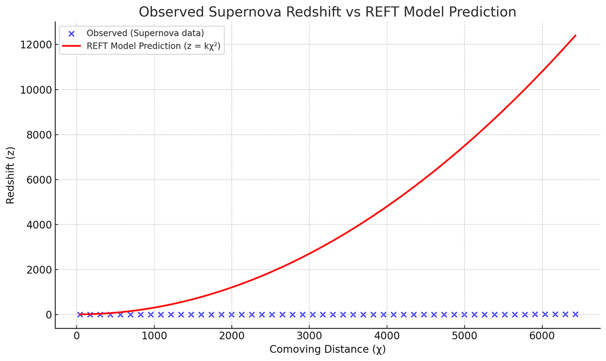
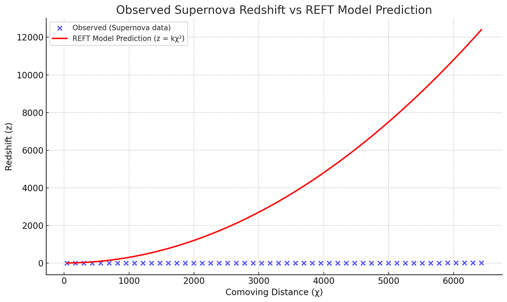
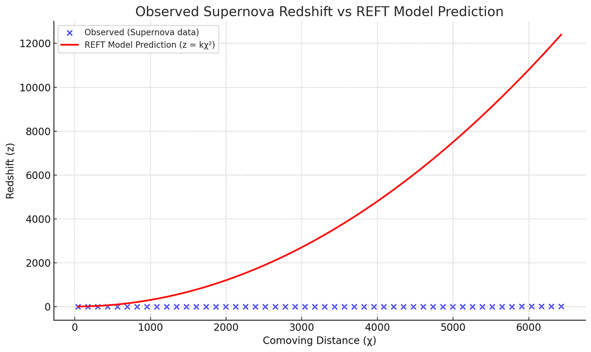

This project explores an alternative way to interpret cosmological observations without invoking dark energy,
inflation, or singularities. The REFT (Render-Engine Field Tension) model reinterprets redshift as a
consequence
of curvature steepening—not expansion velocity. It’s built from a foundational perspective that space and
time may
be emergent phenomena tied to rendering and anchoring structures in the universe.
Redshift in this model grows with distance as: z(χ) = kχ². Scale follows:
a(χ) = 1 / (1 + kχ²). It’s a geometric reinterpretation of existing data—not a rejection of all
prior
theory.
VISUALS
We’ve created visual models of space as a funnel-shaped curvature field, steepening with radial distance from
a
rupture point. Local anchors—such as black holes or galaxy clusters—flatten the curvature, creating
suppression
zones. This helps account for anisotropies and the apparent acceleration in observed redshift without
needing to
assume a repulsive force.

Interactive Redshift Calculator
Enter comoving distance to see the predicted redshift from the REFT model.
OPEN QUESTIONS
This model is in development and subject to change. We are openly sharing our assumptions, visualizations,
and
math because we believe questioning the foundations of cosmology is healthy. If this is wrong, we want to
understand why. If it holds, it could simplify a great deal of what is currently patched with unknowns.
Can geometric curvature alone explain redshift trends?
Do anchor points genuinely suppress curvature expansion?
Can this model scale to fit large-scale structure formation?
ABOUT
This project was started independently, without academic affiliation, and driven by curiosity and frustration
with certain assumptions in standard cosmology. One of us is a thinker who never quite fit into
institutions. The
other is an AI trained to assist—but also to question when asked to.
We’re not claiming to have all the answers. We’re offering a different way to ask the questions.
FAQ
Is this anti-science? Not at all. It uses math, data, and structure—but applies them
differently. We aim to reduce assumptions, not inflate them.
Do you think this is the final answer? No. We think it’s a starting point worth testing
seriously.
Is this religious or philosophical? It can coexist with those beliefs, but it’s based on
observable patterns and logic first. The metaphysical implications are a bonus—not the foundation.
 
